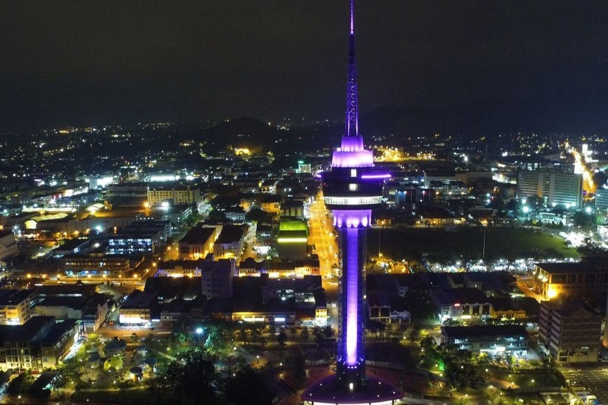
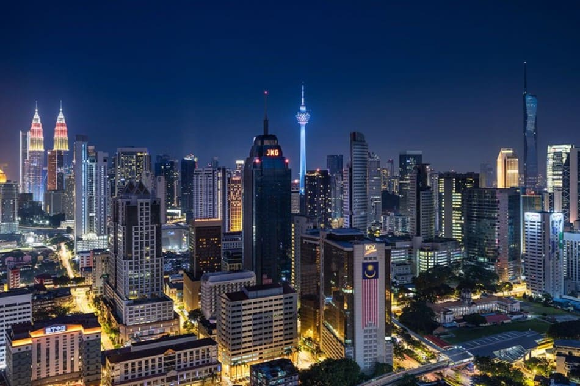
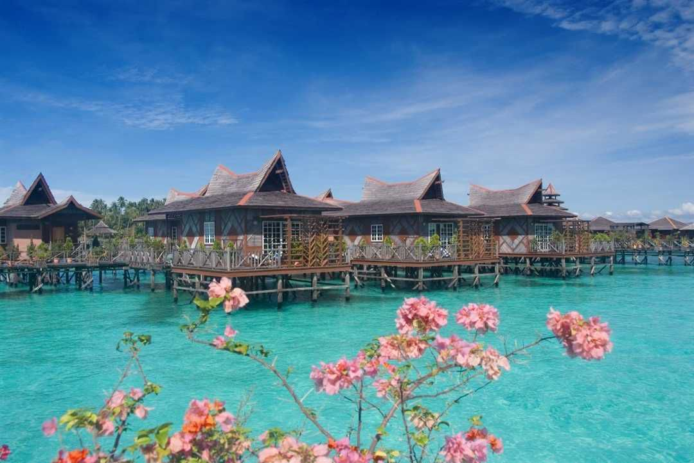
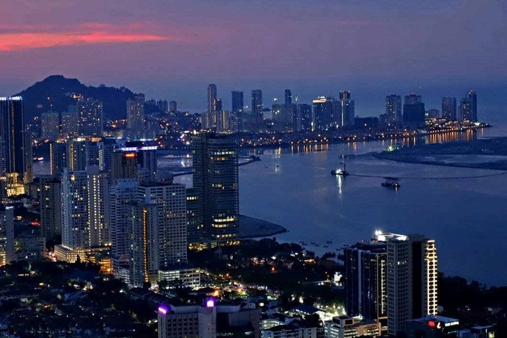

About Us
- Group Name:
- Teh Ais
- Group ID:
- Group 8
- Tutor's Name:
- Ms. Pawani Rasaratnam
- Course:
- Computing Technology Inquiry Project - COS10026
Team Leader
Name: KOK Zi Yan
Date of Birth: 23rd July 2006
Hometown: Kuantan, Pahang
Instagram: Tiffanykzy 
Favorite music: Peaches
Favorite book: Harry Potter and The Deathly Hallows
Favorite show: Sofia the First
Programming Skills: HTML, CSS, Ruby
Program Designer
Name: KHONG Cheng Hao
Date of Birth: 27th June 2005
Hometown: Kuala Lumpur
Instagram: Khongchenghao
Favorite music: Songs by Jay Chou
Favorite book: Harry Potter Series
Favorite show: Marvel Cinematic films
Programming Skills: C, C#, C++, HTML, CSS, Ruby, Python
Researcher
Name: Jayson CHOK Jiun Wei
Date of Birth: 6th April 2005
Hometown: Sabah
Instagram: Jayyy9866
Favorite music: Songs by Jay Chou
Favorite book: Atomic Habits
Favorite show: Fast and Furious
Programming Skills: C++, HTML, CSS, Ruby
Presentation Leader
Name: Janice YEOH Shu Yi
Date of Birth: 27th October 2005
Hometown: Georgetown, Penang
Instagram: Jan._.potato
Favorite music: Too Sweet - Hozier
Favorite book: To Kill A Kingdom
Favorite show: Haikyuu!!
Programming Skills: C++, HTML, CSS, Ruby, Python
| Time | Monday | Tuesday | Wednesday | Thursday | Friday |
|---|---|---|---|---|---|
| 08:00 - 09:00 | COS10009 (Lecture) | MAT2208 (Lecture) | MAT2208 (Lecture & Tutorial) | ||
| 09:00 - 10:00 | COS10009 (Lecture) | MAT2208 (Lecture) | MAT2208 (Lecture & Tutorial) | ||
| 10:00 - 11:00 | COS10004 (Lecture) | COS10026 (Lecture) | COS10004 (Lecture & Practical) | ||
| 11:00 - 12:00 | COS10004 (Lecture) | COS10026 (Lecture) | COS10004 (Lecture & Practical) | ||
| 12:00 - 13:00 | |||||
| 13:00 - 14:00 | COS10009 (Practical) | ||||
| 14:00 - 15:00 | TNE10006 (Practical) | COS10009 (Practical) | |||
| 15:00 - 16:00 | TNE10006 (Practical) | ||||
| 16:00 - 17:00 | COS10026 (Lecture) | ||||
| 17:00 - 18:00 | COS10026 (Lecture) |
About Kuantan, Pahang
Kuantan is the capital city of the state of Pahang, located on the eastern coast of Peninsular Malaysia. It is the largest city in the East Coast region, serving as a vibrant hub for commerce, education, tourism, and government administration. Situated along the South China Sea, Kuantan is known for its beautiful beaches, historical landmarks, and growing urban development. Kuantan is well-connected to other parts of Malaysia through the East Coast Expressway (ECE), making travel to Kuala Lumpur and other major cities convenient. The Sultan Ahmad Shah Airport also offers domestic flights and limited international connections.
About Kuala Lumpur
Kuala Lumpur (often abbreviated as KL) is the capital and largest city of Malaysia. Located in the western part of Peninsular Malaysia, Kuala Lumpur is a vibrant and cosmopolitan city known for its iconic skyline, rich cultural diversity, and booming economy. It serves as the political, cultural, and economic center of the country. Kuala Lumpur blends its traditional cultural roots with cutting-edge modernity. Skyscrapers stand alongside historic temples, and modern malls coexist with bustling street markets. The city is a reflection of Malaysia's multicultural identity and rapid urbanization, making it one of Southeast Asia's most dynamic cities.
About Sabah
Sabah is a Malaysian state located on the northern portion of the island of Borneo, the third-largest island in the world. Known for its stunning natural beauty, diverse ecosystems, and rich cultural heritage, Sabah is a top destination for eco-tourism and adventure travel. Its capital city is Kota Kinabalu. Sabah offers a unique blend of natural wonders, rich cultural heritage, and thrilling eco-tourism experiences. Whether it's climbing the majestic Mount Kinabalu, exploring the lush rainforests, or diving in crystal-clear waters, Sabah is an unforgettable destination for nature lovers, adventurers, and cultural enthusiasts alike.
About Penang
Penang is a vibrant and diverse state located on the northwest coast of Peninsular Malaysia. It is known for its rich history, multicultural heritage, thriving arts scene, and world-famous cuisine. Penang is made up of two parts: Penang Island, where the capital city George Town is located, and Seberang Perai on the mainland. The state is often referred to as the Pearl of the Orient due to its historical significance and charm. Penang is a fascinating destination that offers a unique blend of history, culture, nature, and culinary delights. Whether exploring the UNESCO-listed streets of George Town, relaxing on the beaches of Batu Ferringhi, or savoring the renowned street food, Penang provides an unforgettable experience for travelers seeking the best of Malaysia’s heritage and modern attractions.